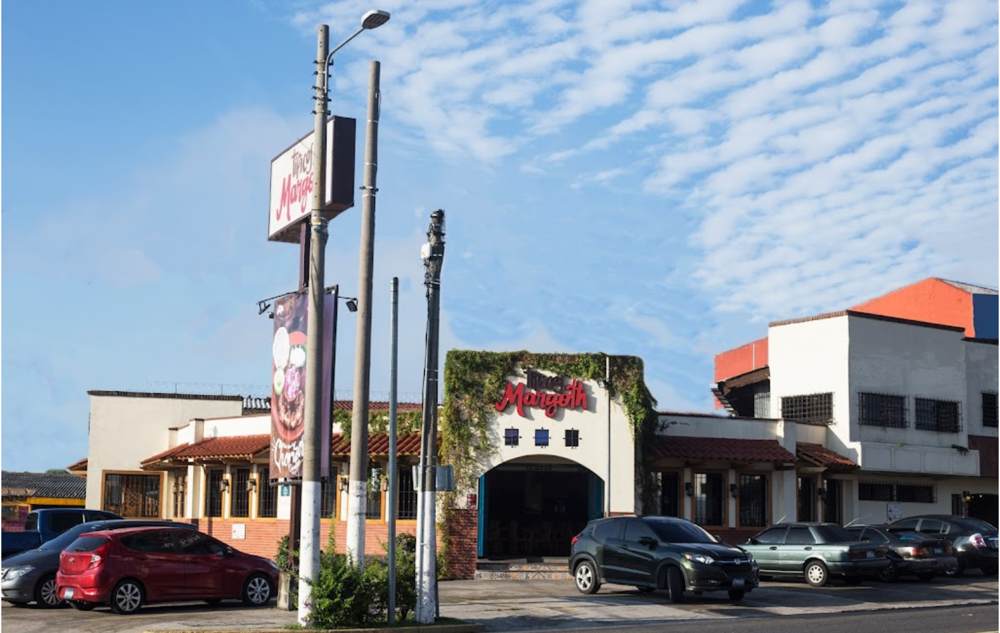

★ Desde 1962 · San Salvador
El sabor auténtico de El Salvador, en cada bocado.
Pupusas recién hechas, antojitos tradicionales y bebidas de la abuela. Más de 60 años representando a nuestro país ante el mundo — porque nuestra casa es tu casa.
60+
Años de tradición
4.0★
Rating en Tripadvisor
8
Tipos de pupusas
